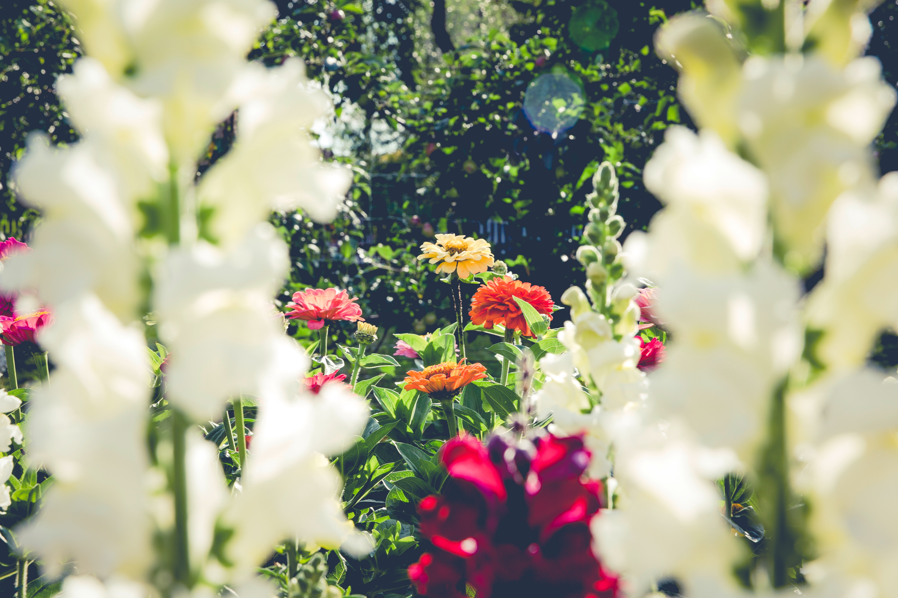
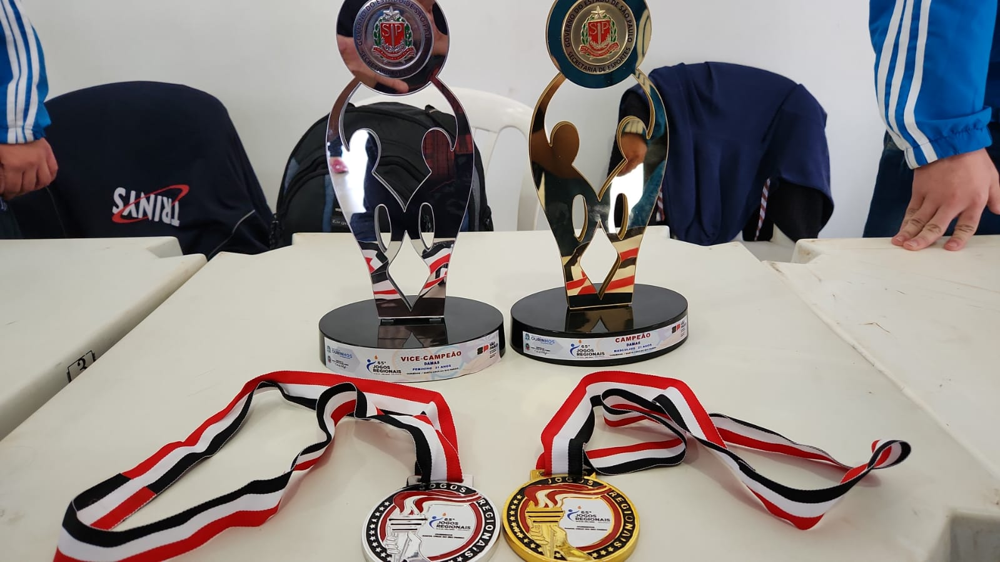

Sobre Mim

Eu sou extremamente vergonhosa para tirar fotos, não gosto de como meu rosto fica em capturas de câmeras.
Paixões
Tenho uma paixão enorme por flores, principalmente as roxas e azuis. As vezes penso em morar no campo mas ja desisto por não querer ficar tão longe da civilização.

Adoro astronomia, mesmo tendo um conhecimento que considero minúsculo sobre esse tema. Eu amo pensar que minha existência é só mais uma ao meio de tantas outras, sem deixar de lado minha importância, mas me lembrando a cada minuto de viver tudo aquilo que tenho para viver sem me importar com os julgamentos que sempre nos acompanham.
Eu jogo damas, pode parecer algo ridículo mas esse hobbie em si me ajudou a controlar minha ansiedade. Não costumo ter controle sobre minha vida e nem sobre meus pensamentos, mas quando jogo damas, eu tenho controle sobre o tabuleiro.